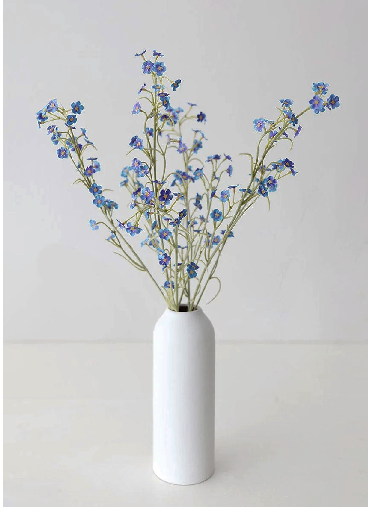

08. FORGET-ME-NOTS
FORGET-ME-NOT
Myosotis Alpestris
Forget me, don’t forget me...The Alpine forget-me-not is Alaska’s state flower. These little flowers range in shade from pale blue to bright blue, and even white or pink blooms. Forget-me-not flowers represent true love and remembrance. Giving someone this flower communicates that you truly love and respect this person, making it a wonderfully endearing gift. It is a testament to your relationships and promises the other person that you will never forget them in your thoughts. In other ways, this flower represents a reminder of your favorite memories with someone or the growing affection between two people.
